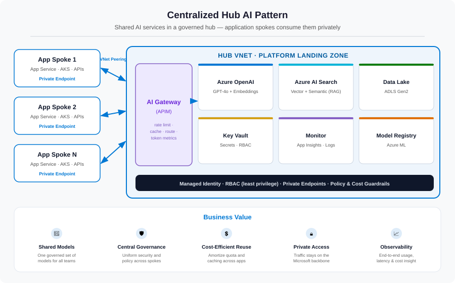

The first generative-AI use case is rarely the real challenge. A motivated team wires up a chat prototype against Azure OpenAI in an afternoon and the demo lands well. The harder question arrives the very next week: how do you scale AI safely across many teams, applications, and environments — without every team building its own isolated AI deployment? This series is a practical, end-to-end walk through one answer: the Centralized Hub AI pattern.
The moment it gets hard
Picture a mid-sized enterprise — say a financial-services firm — six months into its GenAI journey. There isn't one AI project anymore; there are five. The payments team has a support copilot. Risk has a document-Q&A tool. Marketing is drafting content. Two more proofs of concept are forming in the margins. Every one of them works. And that is exactly when the trouble starts.
Because each team, moving fast and independently, did the natural thing: they each provisioned their own Azure OpenAI resource, pasted an API key into app settings, pointed at a public endpoint, and shipped. Individually sensible. Collectively, it's an anti-pattern — and one that quietly becomes very expensive, very ungoverned, and very hard to unwind.
The six problems hiding in the sprawl
Decentralized AI feels like speed, but it accumulates six specific liabilities. Naming them is half the cure, because the hub pattern exists to answer each one directly.
Duplicated cost
Expensive capacity — Azure OpenAI quota, AI Search, model hosting — is bought five times over, each one underused, none of them sharing a cache.
Key sprawl
API keys live in app settings, scripts, and the occasional commit. No rotation, no per-caller identity, no way to revoke one team without breaking the rest.
Governance gaps
Content filtering, data-residency, and responsible-AI controls are configured (or forgotten) per team. There is no single place to enforce a rule.
No observability
Nobody can see latency, failures, or token consumption across the estate. The first signal of trouble is a surprise invoice or an outage.
Quota chaos
One team's batch job exhausts a regional quota and throttles everyone. There is no rate limiting, no fair-share, no spillover.
No repeatability
Each deployment is hand-built. There is no golden path for the next team, so the sixth use case is as slow and risky as the first.
Enter the hub: a shared AI platform
The Centralized Hub pattern reframes the problem. Instead of treating each AI app as a standalone deployment, you build a shared AI platform layer that application teams consume securely — while governance, monitoring, access control, and cost management stay centralized. Architecturally it borrows the well-worn hub-and-spoke topology from Azure landing zones and applies it to AI services.

The idea is deliberately simple. The hub is a platform landing zone that hosts the AI services worth sharing — the large language models, the retrieval index, the data lake, the secrets store, and the monitoring backbone — all fronted by an AI gateway. Each application is a spoke: its own network, its own workload, connected to the hub over private, low-latency links. No spoke talks to the public internet to reach AI; no spoke owns the expensive capacity.
What lives in the hub vs. the spokes
| Concern | Hub (platform team owns) | Spoke (app team owns) |
|---|---|---|
| Models | Azure OpenAI deployments + shared quota | Prompts, app logic, orchestration |
| Retrieval | Azure AI Search service | Its own index(es) and data |
| Entry point | AI gateway (API Management) | A subscription/identity to call it |
| Secrets | Central Key Vault, RBAC | References, never raw keys |
| Networking | Hub VNet, private endpoints, DNS | Spoke VNet, peered to the hub |
| Monitoring | Log Analytics + App Insights | App-level traces flowing to the hub |
How the hub answers each problem
This is the part that matters at each level of the series — every capability we add later maps back to a specific problem from the sprawl. Here is the whole map in one table; the rest of the series implements each row.
| Sprawl problem | Hub capability that solves it | Covered in |
|---|---|---|
| Duplicated cost | Shared models + response caching, amortized across spokes | Parts 3 & 4 |
| Key sprawl | Managed identity + RBAC; local keys disabled | Part 5 |
| Governance gaps | One gateway choke point for policy, content filtering, residency | Part 4 |
| No observability | Centralized token metrics, tracing, dashboards, alerts | Part 6 |
| Quota chaos | Per-spoke token-limit policy + multi-backend load balancing | Part 4 |
| No repeatability | Bicep modules + CI/CD promotion + an onboarding golden path | Part 7 |
| Public exposure | Private endpoints, private DNS, deny-all networking | Part 2 |
The part the diagram doesn't show: the operating model
Here's the lesson I keep relearning on these engagements: the architecture diagram is the easy half. What actually makes a hub succeed is the operating model — the answers to a set of distinctly un-technical questions. If you can't answer these, the prettiest Bicep in the world won't save you:
- Ownership — who owns the shared AI services, and who is on the hook when they're down?
- Onboarding — how does a new team get a spoke and start consuming AI? Is it a ticket, a pull request, a self-service template?
- Cost control — how do you prevent one team's runaway token consumption, and how do you attribute spend back to teams?
- Monitoring — who watches latency, failures, and cost, and what do they do when a threshold trips?
- Promotion — how do AI apps and agents move across dev, staging, and production?
- Autonomy vs. governance — how do you give teams enough freedom to move fast while keeping the enterprise guardrails intact?
That shift in conversation — from "we built an AI proof of concept" to "we have a repeatable foundation to scale AI responsibly" — is the real deliverable. We'll close the series in Part 7 with concrete answers to every one of these questions.
Is this pattern right for you?
The road ahead
We'll build the hub from the network up, one governed layer at a time. Each part stands alone, but they stack:
| Part | What we build | The problem it solves |
|---|---|---|
| 2 | Hub-and-spoke VNets, private endpoints, private DNS, NSGs | Public exposure & data-exfiltration risk |
| 3 | Shared Azure OpenAI, AI Search, Data Lake, Key Vault, model registry | Duplicated, inconsistent services |
| 4 | API Management as the AI gateway — limits, caching, routing | No governance, no cost control, quota chaos |
| 5 | Managed identity + RBAC; keys disabled everywhere | Key sprawl & weak isolation |
| 6 | Token metrics, tracing, dashboards, alerts, FinOps | No visibility into usage, latency, or spend |
| 7 | Bicep modules, CI/CD promotion, the operating model | No repeatability; unclear ownership |
References
- Azure landing zones — Cloud Adoption Framework
- Hub-and-spoke network topology in Azure
- Baseline OpenAI end-to-end chat reference architecture
- Azure OpenAI chat baseline in an Azure landing zone
- Centralized Hub AI — deployment pattern reference
What's next
In Part 2 we lay the foundation everything else sits on: the network landing zone. We'll build the hub VNet and its subnets, peer the spokes, put every AI service behind a private endpoint, wire up private DNS so names resolve correctly, and lock the doors with deny-all NSGs — so that no part of the platform is ever reachable from the public internet.